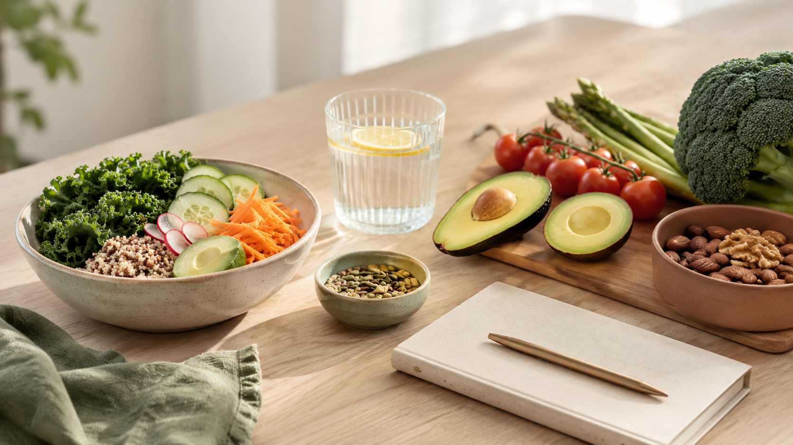
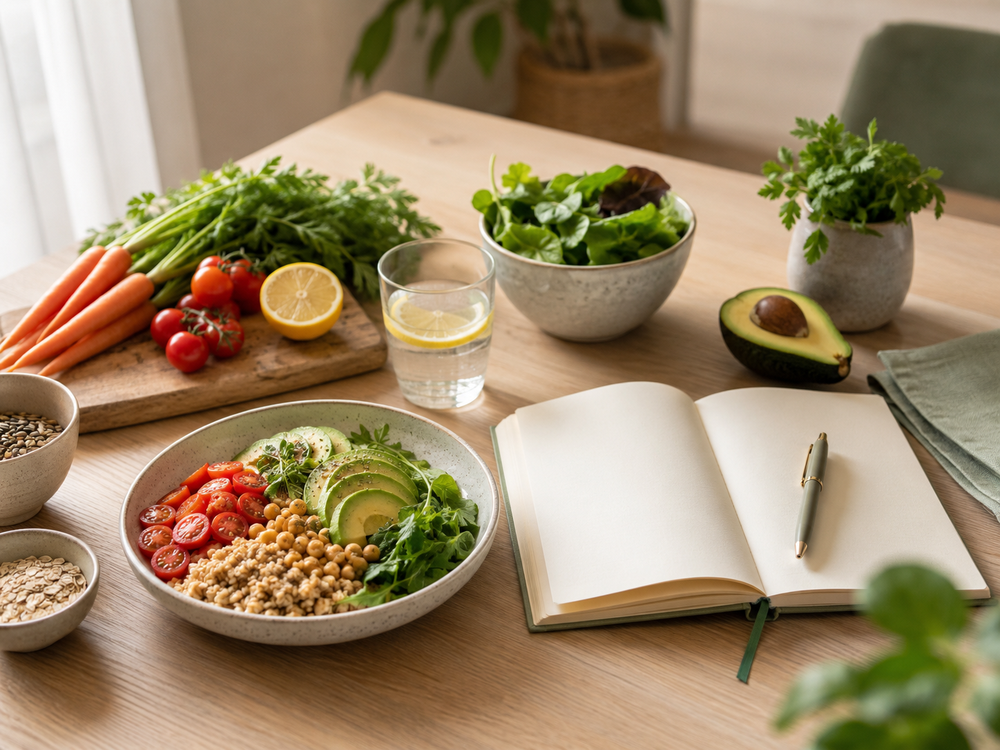

Mieux manger sans régime strict
Retrouver des repères simples et compatibles avec votre quotidien.
Un accompagnement simple, concret et personnalisé pour retrouver une alimentation plus équilibrée, sans régime extrême ni culpabilité.
Je vous accompagne en visio pour faire le point sur vos habitudes alimentaires, votre rythme de vie, vos objectifs et vos contraintes. L’objectif est de construire une organisation alimentaire réaliste, adaptée à votre quotidien, avec des conseils simples à appliquer.
Le coaching nutrition en visio peut inclure un bilan nutrition en visio, un plan alimentaire personnalisé non thérapeutique, un accompagnement alimentaire et un suivi nutrition 4 semaines ou un suivi nutrition 8 semaines pour mieux manger progressivement, dans une logique de rééquilibrage alimentaire accessible.

Le coaching nutrition s’adresse aux personnes qui veulent reprendre leur alimentation en main sans tomber dans les régimes extrêmes, les interdits permanents ou la culpabilité. L’objectif est de retrouver une organisation simple, adaptée à votre vie réelle.
Retrouver des repères simples et compatibles avec votre quotidien.
Planifier les repas, les courses et les semaines chargées plus sereinement.
Comprendre les moments sensibles et trouver des alternatives réalistes.
Construire des repas accessibles, variés et faciles à reproduire.
Avancer vers une alimentation plus stable, sans promesse miracle.
Trouver une organisation alimentaire adaptée aux contraintes professionnelles.
Hors situation médicale particulière, travailler l’équilibre alimentaire général.
Installer des ajustements progressifs et compatibles avec votre vie réelle.
Cet accompagnement concerne l’équilibre alimentaire et les habitudes du quotidien. Il ne remplace pas un suivi médical ou diététique en cas de pathologie.
Le but n’est pas de vous imposer une alimentation parfaite, mais de construire avec vous une méthode réaliste : mieux comprendre vos habitudes, équilibrer vos repas, anticiper les courses, limiter les grignotages et trouver une organisation durable.

Trois formules en visio selon votre besoin : un bilan pour démarrer, ou un suivi plus long pour installer de nouvelles habitudes alimentaires.
Le coaching alimentaire en ligne se construit progressivement, avec des échanges clairs et des ajustements selon votre réalité.
Mon objectif est de vous aider à retrouver une alimentation plus équilibrée sans tomber dans les régimes extrêmes, les interdits permanents ou la culpabilité. Je privilégie une approche concrète, progressive et adaptée à votre vie réelle.
Le coaching nutrition peut accompagner une démarche générale d’équilibre alimentaire dans un projet grossesse ou en post-partum. En revanche, pendant la grossesse ou en cas de diabète gestationnel, perte de poids importante, trouble du comportement alimentaire, pathologie digestive, maladie rénale, carence, traitement médical ou grossesse à risque, un avis médical, sage-femme ou diététicien reste nécessaire.
Le coaching nutrition proposé ne remplace pas un suivi médical, diététique ou psychologique. En cas de pathologie, grossesse à risque, diabète, trouble du comportement alimentaire, maladie digestive, maladie rénale, carence, traitement médical ou situation particulière, un avis médical ou un suivi par un professionnel de santé adapté reste nécessaire.
Vous pouvez aussi retrouver les informations sur l’ostéopathie à domicile et les zones de déplacement.
Les réponses aux questions fréquentes avant de réserver un bilan nutrition en visio.
Non. Le coaching nutrition proposé ne remplace pas un suivi médical ou diététique. Il s’agit d’un accompagnement autour des habitudes alimentaires, de l’organisation des repas et de l’équilibre alimentaire au quotidien.
Oui, je peux proposer un plan alimentaire personnalisé non thérapeutique, adapté à vos objectifs, vos goûts, votre rythme de vie et vos contraintes.
L’accompagnement peut aider à structurer l’alimentation et les habitudes du quotidien, mais aucune perte de poids n’est promise. En cas d’obésité, pathologie, trouble alimentaire ou objectif médical, un avis médical ou diététique est recommandé.
La séance se déroule à distance, via un lien de visio. Nous faisons le point sur vos habitudes, vos objectifs et vos contraintes, puis je vous propose des conseils adaptés.
Oui, pour un accompagnement général autour de l’équilibre alimentaire, hors situation médicale particulière. En cas de diabète gestationnel, grossesse à risque, carence, nausées importantes ou suivi médical spécifique, il faut demander l’avis de votre médecin, sage-femme ou diététicien.
Le bilan est idéal pour faire un premier point. Le suivi 4 semaines permet de mettre en place de nouvelles habitudes. Le suivi 8 semaines est plus adapté si vous voulez un accompagnement progressif et durable.
Non. L’objectif est de proposer une base claire et réaliste, pas un programme impossible à tenir. Le plan est adapté à vos goûts, à votre rythme de vie et à vos contraintes.
Oui, le coaching nutrition est proposé en visio afin de pouvoir vous accompagner à distance, simplement, sans déplacement.
Vous pouvez me contacter par téléphone ou SMS pour choisir la formule la plus adaptée à votre situation.
Bilan nutrition : 50 € en offre de lancement – Suivi 4 semaines : 180 € – Suivi 8 semaines : 350 €